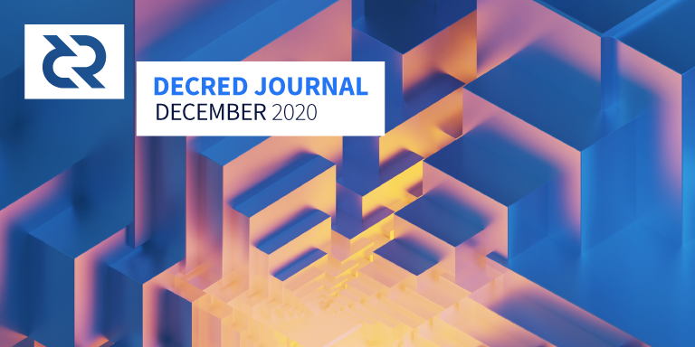

Decred月报 – 2020年12月

图片: @saender
祝大家新年快乐！
十二月的亮点：
- 经过一个月的完善，v1.6确实看起来更棒了。候选版本5准备发行。
- 链上数据在12月变得很疯狂，包括选票价格大幅上涨至191 DCR。
- 社交媒体指标也在迅速发展，推特@decredproject追踪数突破了关键阻力位。
- DCR从Upbit退市，导致价格飙升，保证金交易被添加到其它几家交易所。
开发进展总结
除非另有说明，否则此处报告的工作仅限为“合并到主核心存储库”状态。这意味着这项工作已经完成、审查并集成到高级用户可以构建和运行的源代码中，但对于普通用户来说，还不能使用。
合并在主版本中，并反向移植到v1.6：
- 更正了费用计算，以修复某些交易在某些重组方案中被视为较低优先级的交易
- 将DCP-5违规列入白名单。由于已修复了bug，当大多数网络已升级到版本7时，旧版本6会接受5个块。这些块原本是有效的，现在已列入白名单，以允许完全同步链而无需检查点
合并到主存储库：
- 将上下文检查从健全性/位置功能移动到适当的位置，以恢复在去中心化国库支出工作之前的预期限制。这些将是必要的解耦块处理顺序从下载顺序。
- 改变了主链区块缓存语义，减少了对块数据显示顺序的依赖
- 将数据块管理器提取到其自己的
netsync程序包中，以提高其可测试性，并从共识验证中更清晰地拆分与网络的同步 - 对对等区块下载的其它一些更改
- 添加了挖矿测试工具，可以更轻松地添加测试范围并帮助优化块模板生成代码
- 更改了RPC服务器身份验证，以使用HMAC-SHA256以及每次启动时唯一的随机密钥来加强对某些类的内存转储攻击的能力
- 更多rpcserver测试范围
- 更新了多个位置以遵循错误处理最佳试验
- 全面的代码更改和测试更新
总共合并了来自6个贡献者的51个PR和92个提交，添加了10K行和删除了8K行代码。
- 随机选择硬币以支付VSP费用（这也可以重试并完成一些以前总是失败的VSP票证购买）
- 固定的未发布输出用于为其他交易提供资金（与VSP费用保持一致，直到票证与VSP一起提交时才处于未发布状态）
- 代码重构
进行中：
- 能够导入来自其他种子的投票帐户（支持Trezor赌注）
发布rc5很可能解决一些剩余的问题。
- 删除了公共路线上的CSRF，以防止CSRF令牌链接点滴投票的可能性。对隐私的影响最小：将CSRF令牌链接到点滴投票将需要编写其他代码，因为所使用的CSRF库不会自动完成。
- 用于提案编辑的端到端UI测试
- 删除了烦人的注销模式，并将很少使用的“永久注销”功能移至“帐户”选项卡
- 验证选票的新
politeiavoter命令 - CMS发票处理和查看的UX改进
- Politeia和CMS的bug修复
来自@lukebp的tlog集成更新：
添加了检索用户提交的任何数据的完整时间戳（包含证明）的功能。为此的前端工作仍在进行中。后端tlog分支现已完成功能，我们将开始代码审查过程。
- 拒绝重用或旧时间戳
- 数据库代码的更多测试范围
- v1.0版本的较小修复程序和其它准备工作
- 新的最大订单按钮，可根据市场，市场面和钱包余额以最大数量填充数量字段
- 通过HTTP和WebSockets公开市场数据API端点
- 显示每个DEX服务器的帐户ID
- 支持为BTC订单提供资金的已确认产出
- 从数据库中恢复交换程序（比以前的方法更好，代码更少）
- 允许应用监听IPv6地址
- 改善颜色以区分买卖订单
- 许多bug修复和依赖项升级
来自7个贡献者的28个PR进行了合并，增加了8K行以及删除了5K行代码。
修补程序版本v0.1.4即将关闭。
- 提取cfilter时的通知
- bug修复
合并到dcrlibwallet共享库中：
请注意，假设这些应用程序添加了必要的UI，添加到dcrlibwallet的功能将可供dcrandroid，dcrios和godcr使用。
- XCUI在某些情况下自动进行UI测试
需要使用用于覆盖小部件的API才能完全实现Godcr的预期设计。这引起了Gio团队的注意，并被视为优先事项。
- 脱机模式支持以完全满足Construction API的规范，其中某些操作仅在脱机实例中执行
- 删除无效的贡献者
- 依赖升级
其他：
- Electric Capital的研究人员已在Decred生态系统中绘制了大多数存储库，并构建了可视化其活动的工具
人员
欢迎新到来的首次贡献者，他们的代码已合并到主代码库中： @piotrdelikat (decrediton)!
截至1月2日的社区统计数据：
- Twitter 粉丝: 41,320 (+423)
- Reddit 订阅: 10,051 (+69)
- Matrix #general 用户: 287 (+34)
- Discord 用户: 1,723 (+222)
- Telegram 用户: 2,338 (-1)
- YouTube 订阅: 4,300 (+50), 观看量: 165K (+3K)
- LinkedIn 粉丝: 944 (+12)
- GitHub dcrd 星星: 570 (+3), 叉: 247 (+1)
我们跟踪的统计数据有几个要点：
- @decredproject Twitter打破了41K的粉丝，增加了+423
- Reddit突破1万个订阅
- Discord提高14％
- DecredTrading Telegram的用户数增加了72％，达到158位（上帝帮助我们）
- @Checkmate得到了+ 11％的关注者（达到3.5K）并发出了1K的推文（〜34 /天）
- DecredES 上涨+ 18％（至245）
- CoinMarketCap有17.8K的关注量
感谢Decred在所有平台上的贡献者提高了对该项目的认识！
治理
十一月国库收到12099 DCR，花费7466 DCR。按照9月份的每日平均DCR/USD汇率31.07美元计算，这是37.6万美元的收入和23.2万美元的支出。按11月平均汇率18.19美元计算，当月完成工程的美元账单金额为13.6万美元。截至1月5日，社区开发基金余额为641260 DCR（3020万美元，47.16美元）。
在12月提交了两个提案并进行了投票：
- Decred ES团队的第三项提案要求14,800美元用于资助六个月的工作，从最初的要价42,000美元缩减到与Talent Land Blockchain Challenge和Codigo Decred有关的项目。该提案以54.5％的赞成票被否决，但未能达到60％的门槛-投票率为37％。
- 在削减了LATAM市场营销提案的hackathons元素之后，提交了Decred Hackathons和LATAM Initial Chapter提案，其背后的人是ES团队的成员。该提案要求最高预算为17,000美元，用于创建黑客马拉松的材料并运行两次黑客马拉松，其中3,500美元的预算用于奖励奖品。该提案以50.2％的赞成票和36％的投票率被拒绝。
12月是美国，拉美和巴西市场营销提案的最后一个可计费月份。为他们工作的承包商将需要提交续约提案以保持资金。
@JoeGruff为他的地址扫描器建议发布了三个简短的进度和费用更新。
尽管12月对于提案来说是一个安静的月份，但是1月已经有两个新的提案，用于DCRDEX和Decred in Depth的新资金（在新的管理下）。
Politeia Digest在12月休息了一段时间，但很快就会回来。
网络
全网算力: 11月哈希率 以292 Ph/s开启并以 340 Ph/s结束。月内，最低为240 Ph/s，峰值为452 Ph/s。哈希率分布 截至1月1日：UUPool 42%, Poolin 35%, easy2mine 12%, F2Pool 3.9%, Antpool 2.7%, Huobipool 2.6%, BTC.com 1.3%, Luxor 1.2%, CoinMine 0.02%。
Staking: 30天平均票价为 163.9 DCR (+5.2). 票价在150.6-190.99 DCR之间变化。锁定金额为642-668万DCR，相当于参与PoS的可用供应量的52.01-54.20%。
又高了。门票价格达到DCR 190.9的峰值，锁仓比例达到54.2％。
节点：整个12月，每个dcr.farm平均有87个公共侦听节点，总共200个节点。12月的平均版本分布：27％dcrd v1.5.2、21％dcrd v1.6开发人员和RC版本，16％dcrd v1.5.1、5％dcrd v1.7开发人员版本，5％dcrd v1.5.0、3％dcrd v1.5开发人员和RC版本，0.7％dcrd v1.4、10％dcrwallet v1.5.1、1.3％dcrwallet v1.6开发人员和RC版本，1％dcrwallet v1.5、0.7％dcrwallet v1.4、9％其它。
@Checkmate通过我们的网络新闻报道说，许多链上指标都达到了历史新高。
@PermabullNino报告说，在28天内，票池余额的DCR增加了约500K 。
Mainnet闪电网络正在缓慢增长。整个2020年，平均有15个节点，30个通道和6个DCR容量。截至1月8日，根据@jholdstock的LN地图，共有24个节点，42个通道，总容量为8.7 DCR 。
整合
Ultravsp（以前是Ultrapool）和Ubiq VSP都已启动了新的vspd投票软件的主网实例。他们的dcrstakepool服务器将分别继续在legacy.ultravsp.uk和 dcr.ubiqsmart.com上运行。
请注意，由于英国脱欧造成域名混乱，Ultravsp必须从ultrapool.eu迁移到英国域ultravsp.uk，并且由于设置它的过程过于繁琐，因此不会进行自动重定向。最近通过电子邮件通知了购买票的VSP用户。
Bittrex添加了即时交换功能，该功能使用户可以使用借记卡或交易所的法定余额快速购买资产。据报道DCR交易可以进行。
Binance已启用DCR / BTC和DCR / USDT的保证金交易，并宣布了为期1周的“借入DCR的零利率促销”。(讨论)
MXC交易所 在2019年列出的常规DCR / USDT对之外，MXC Exchange还增加了5倍杠杆保证金交易DCR / USDT对。
土耳其交易所Bitexen 宣布DCR在其他11种资产中上市。
总部位于马耳他的即时交换聚合服务商Swapzone自5月或更早就开始提供DCR支持，但是在12月，它受到了我们的关注，并添加到decred.org交换页面。
Korean Upbit已将DCR移除，显然与Decred保护个人隐私的使命背道而驰。
警告：Decred Journal的作者不了解上述任何服务的可信赖性。在将您的个人信息或资产信任给任何实体之前，请先进行自己的研究。
外展活动
Decred西班牙团队发布了他们的第二份提案的最终第六份报告。第3项提案的投票以54.5％和50.2％的赞成票结束，但未达到要求的60％门槛。该团队正在收集有关Reddit的反馈，并计划下一步的工作。
@ michae2xl发布了最终报告，该报告涵盖了巴西市场营销提案的12月活动。
Monde PR在12月成就：
- 创造并推销了两个故事创意，以资助和加密出版物
Monde PR保证的新闻报道：
- NASDAQ Trade Talks对@ jy-p进行了采访，谈到Decred在巴西大选中的用途。随后的Coin Journal, Crypto Potato, Coin Market Cap和CryptoMode中提到了采访。
- 在DCRDEX发布和Decred在巴西选举使用的细节在功能Cointelegraph
- @ jy-p受到Geek Insider播客的采访，谈论Decred的起源，DCRDEX的发布以及Decred在巴西大选中的使用
- Brave New Coin介绍了DCRDEX发布的详细信息
- @ jy-p的Cointelegraph访谈中有关比特币牛市和熊市周期的评论在Forex Academy和Inside Bitcoin发表
- @ jy-p对Ledger的安全挑战的评论发表在The Union Journal 上
活动
参加：
- 12月3日 - Hablemos Decred 24 - 互联网。@elian和@pablito讨论了私有加密货币的情况。
- 12月5日 - World Blockchain Conference - 中国武汉。没有正式的Decred活动，但@Dominic在Cobo Wallet，F2Pool等网站与老朋友会面，向他们介绍即将推出的v1.6和新的共识规则。
- 12月10日 - Hablemos Decred 25 - 互联网。西班牙团队的代表聚集一堂，对在DAO工作1年进行了回顾，总结了DAO的好，坏，挑战以及2021年的未来。
- 12月11日 - Cripto Latin Fest Online 2020 - 互联网。Paxful Latam协办。Decred是VIP赞助商。@elian介绍了Decred和即将推出的Hidden Hydra的常见话题，在Facebook上的观看次数为1.6千，在YouTube上的观看次数约为800。在另一个小组中，他谈到了如何防止加密骗局。
- 12月16日 - UAM Xochimilco - 墨西哥墨西哥城。@adcade在UAM霍奇米尔科大学的Aula多媒体实验室中讨论了Decred的组织和礼节。
- 12月18日 - New Year at CR! - 互联网。加密资源学院组织了一次年终活动，邀请了Decred，Bitso，Prime XBT DAI，Binance等合作伙伴。在治理小组会议上，@ elian介绍了Decred治理的工作方式，POLITEIA的作用和财政部的权力下放。
- 12月24日 - Decred AMA - 互联网。西班牙社区中的OKEx AMA在其Telegram上进行了约500位用户。有关Decred的治理，隐私，未来发展，历史和DEX的问题超过30个。还有一个DCR赠品（OKEx提供20美元，西班牙语Decred提供30美元）。超过30个新成员加入了@DecredES频道。
- 12月30日 - Decred in Spanish New Year Giveaway - 互联网中有所下降。要参与，人们需要加入@DecredES Telegram，并告诉他们他们对Decred的看法。在28条评论中，根据对项目的了解和理解，选择了9条最佳评论，总共获得了3条DCR。
上面的信息可在我们的活动跟踪器中更详细地获取，该事件跟踪器旨在了解有效的方法并改进营销工作的报告。感谢大家提交和审阅活动。
媒体
@mm完成了他的有关区块链治理的7部分系列文章：
- 1 介绍加密货币，货币印刷和比特币
- 2 介绍了加密货币，工作量证明安全性，激励措施和通货膨胀背后的技术
- 3 介绍了基本架构类型（免许可/许可，公共/私有），比特币治理，隐私和可替代性以及数字货币以外的区块链应用（尤其是电子投票）
- 4 介绍Decred Project的基础知识（安全性，共识性，资金，游戏中的皮肤）并将其与纯PoW和PoS方法进行比较
- 5 使用@mm的InvalidationGame攻击模拟器评估了比特币与Decred的区块链安全性和治理，并考虑了外部和内部攻击。除其他细节外，它提供了攻击比特币和Decred所需的资本支出和运营支出的单独估算。
- 6 测试了针对真实数据的许多假设（主题包括链上指标与价格，选民投票率，OLS模型等的相关性）
- 7 通过总结模拟结果，有关安全性的发现以及Decred可以为世界提供的内容来总结该系列
Decred Project不仅旨在为依赖可信赖的第三方的金融系统和依赖大型金融机构的善意的人们提供替代方案，而且还展示了如何以安全透明的方式进行电子投票。
研究中使用的Python / R / SQL代码可在GitHub上获得。
精选文章：
- Decred价格分析 - 活跃指标创下历史新高，因为趋势指标被Josh Olszewicz(bravenewcoin.com)）看涨-带有视频版本
视频:
- Decred 双周报 - 修改了隐私页面，大量开发人员更新，1.6入站等等！@Exitus (youtube)
- 价格年度新高 Decred Society (youtube)
- Decred 非常适合储蓄用户 Decred Society (youtube)
- Decred加密分析 DubDigital (youtube)
- ake Yocom-Piatt在Geek Insider上谈论Decred和区块链 (youtube) -区块链如何在选举中使用？与纳斯达克TradeTalks的Jake Yocom-Piatt和Jill Malandrino (youtube)
- Staked Podcast对@BTC_Uncle的采访 (youtube)
- Staked Podcast对Ammar Naseer（@Ammarooni）的采访(youtube)
- @Checkmate的2020年onchain封闭会议BTC + DCR(youtube)
- Decred Deep Dive：隐藏的hydra释放即将到来！由@Checkmate(youtube, discussion)
音频:
- Rough Consensus 14: 重塑牛市。@Checkmate和@PermabullNino分享了他们对比特币ATH，ETH 2.0，DCR 1.6等的想法。 (libsyn)
艺术/娱乐：
- 爆笑Decred GOT cover @degeri
- @ aithzakaria1的“他们不知道我已经拒绝了”
- 现在是Decred的时间了，Ben！@ aithzakaria1
- 适应生存- @OfficialCryptos设计的商品
- DCR暴力切断CMC@Exitus
- @AGNFAB的数字国家状态
- @New_Copernicus在Hidden Hydra, Decred Rabbit Hole, cheerful Happy Holidays!和Happy New Year!上分享了更多预告片！和新年快乐！
翻译：
- 阿拉伯语翻译：“ decred：一切从哪里开始？” 发布在satoshiat.com加密专用网站上。
- 一般的“加密资产的实用性”和更技术性的“数字钱包的安全性增强”和“验证数字签名：拒绝”，由@francov_译成西班牙文（请参见西班牙语翻译库及其媒介）
- 2020年11月的Decred月报被翻译成阿拉伯文（@ arij，@ abdulrahman4），中文（@Dominic）和西班牙文（@francov_）。谢谢大家传播Decred月报！
- 截至撰写时，该索引中已跟踪305项所有已知译文
其它非英语内容：
- “Decred的加密货币增加了50％，超过了DeFi硬币” (es.cointelegraph.com)
- @arij用阿拉伯语大大改进的Decred简介(youtube)
社区讨论
精选Reddit帖子：
精选的Twitter讨论：
市场
12月DCR美元交易价格为24.01-41.59 USD，BTC价格为0.0012-0.002之间。每日平均价格为$31.07。
DCR的交易异常的Upbit高达$ 3,500，直到它被下架。
在DCRDEX开启交易的48天中，DCR的交易量约为60万，相当于同期Binance交易量的30％。但是，与任何集中式交易所不同的是，该交易量更加真实可靠。
@bochinchero在Decred上发布了他的第一篇链上分析文章，提出了新的评估指标：
抵押的已实现价值是一种类似于已实现价值的度量标准，但仅适用于选票池中流通的硬币，本质上将每张选票视为UTXO。[它]提供对锁定在网络安全性和治理中的资金的更准确评估。在过去的急剧抛售中，它充当了心理触底-最大痛苦的点，最后的买家介入其中。
@Checkmate宣布启动checkonchain.com，其中包含许多图表（许多图表）：
这是我已经从事很长时间的工作了。如果您想在这个市场上占据优势，请关注它。不久之后，将全面讨论如何正确应用每个指标。
相关外部信息
Cover Protocol是一个DeFi保险项目，旨在“保护DeFi用户免受智能合约风险的侵害”，遭到黑客攻击，攻击者铸造了40亿个COVER代币，以400万美元的价格清算了这些代币，但随后将资金返还给了智能合约。该团队现在正在考虑使用快照创建一个新版本的COVER令牌，以退还COVER持有人，因为否则，那多余的40亿个令牌会破坏令牌系统。
攻击者诱使Nexus Mutual的首席执行官欺骗了他，使其签署了一笔交易，将他所有的NXM都发送到了攻击者的钱包中，从而遭到830万美元的黑客攻击。攻击者向BTC洗了270万美元，这使NXM的价格降低了，然后他们在以太坊区块链产品上发送了一条消息，要求归还其余部分（以便NXM避免进一步的痛苦），以280万美元的ETH赎金。
去年12月，DeFi融资最多的是Compounder finance，后者的开发人员在合同中利用了一个隐藏的后门，因此潜逃了1,080万美元的投资者资金。
去年12月最大的快速贷款攻击受害者是Warp Finance，该漏洞的损失为770万美元，但585万美元将退还给持有人。可以说，这也是12月份DeFi黑客最多的退款，但是COVER是该头衔的竞争者，因为尽管返回的美元金额较小，但它却占COVER供应的可笑比例。
Gitcoin结束了强劲的2020年，其第8轮以太坊资金看到了45万美元的匹配资金，并且第一轮非以太坊资金也为Zcash项目完成了，从Zcash基金会分配了2.5万美元的匹配资金，但仅吸引了156笔捐款总计$ 2,137。
美国国会提出了一项法案，要求稳定币发行人获得银行宪章，在流通任何硬币之前，必须先获得美联储和其他机构的批准。
然后，加密货币法规的第一线转移到“自托管钱包”（即任何自托管的加密货币），并要求交易所对涉及这些可疑实体的交易进行尽职调查的程度。
Bittrex宣布将于1月15日将隐私币Monero，Zcash和Dash退市，但未说明具体原因。在此之前一个月左右，ShapeShift已将这些硬币除名。
在美国证券交易委员会指控Ripple Labs通过出售未注册证券销售的代币来筹集13亿美元之后一周，Bittrex也成为第11家将XRP退市的交易所。这提醒我们，筹集资金是一项长期的系统性风险，可能会在ICO之后的数年内适得其反。
为了摆脱监管机构的压力，Facebook的天秤座更名为Diem，放弃了获得一篮子货币支持的愿望，转而支持美元的直接支持。
Ledger最初在7月份报告的客户数据泄漏，现已公开转储。在原来的公告莱杰表示，更详细的信息，如物理地址已经为9.5K的客户访问，但似乎现在这部分信息已收获272K客户。
请在互联网上支持月报
我们收获了100多个Twitter平均60个点赞，1K+Medium的掌声，12月10日在“Medium”上标记为“DEX”的帖子，在Publish0x上的良好观看率等等。
感谢您的支持！请继续为最好的加密货币项目带来更多知名度。
关于月报
这是Decred Journal的第33期。有关所有问题，镜像和翻译的索引，请参见这里。
在经过最少的健全性检查之后，来自第三方的大多数信息都会直接从来源中继。Decred Journal的作者无权验证所有声明。请当心诈骗，并自行进行调查。
您可以在此处提交内容，以供撰写下一期月报内容。我们随时欢迎您的反馈和贡献。
感谢 (字母排列):
- 写作和编辑: bee, degeri, l1ndseymm, lukebp, richardred
- 评论和反馈: davecgh, elian, JoeGruff, oshorefueled
- 封面图片: saender
- 资助： Decred Treasury
中文社区
- 社区网址
- 微博
- 微信公众号
- 中文电报群
- bilibili频道
- QQ群号-258412796